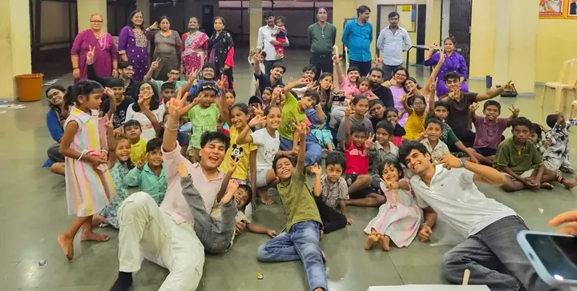
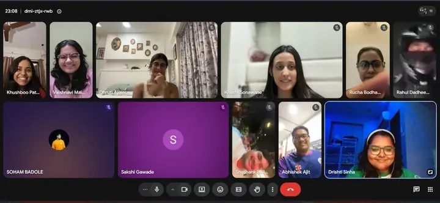
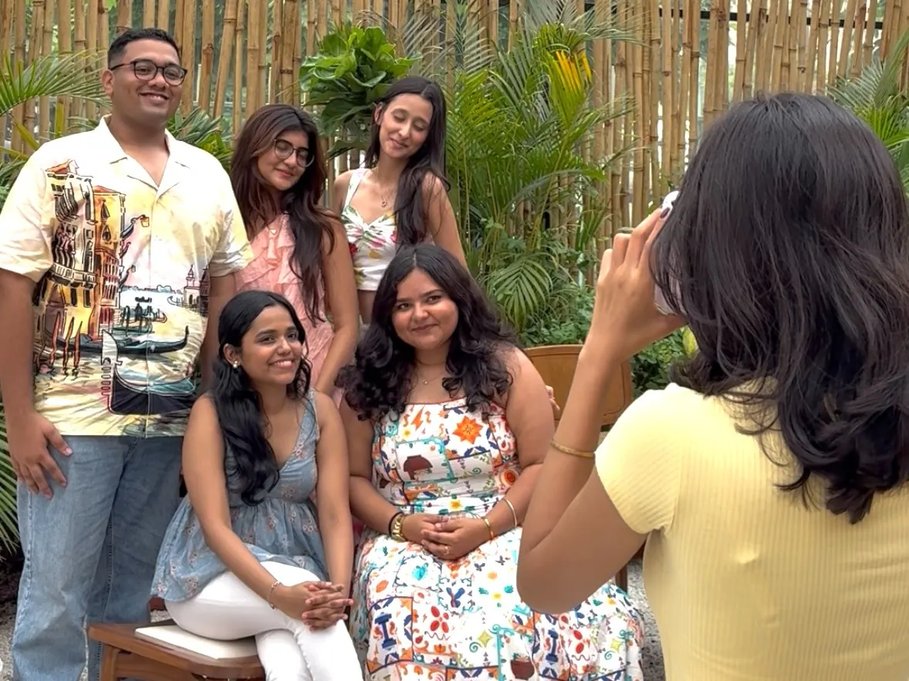
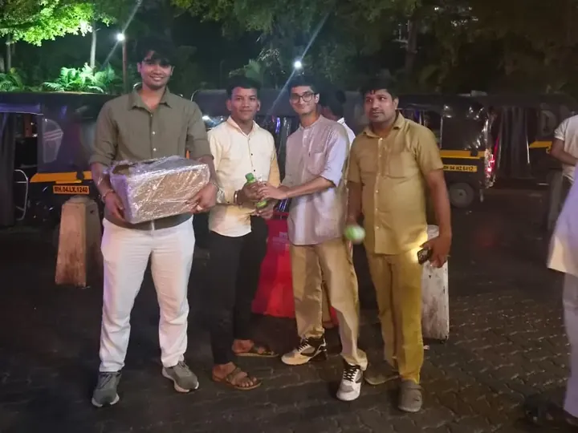

Service


Leo Club International · District 3231 A4
Our motto for the year
Just as a building stands firm because of its foundation, our club stands strong because of the bonds that bring us together.
The circle that leads
Each card lights as the dragonfly passes it.
Activities till now

Service
Leadership
Fellowship
ServiceFinger painting, games, and a birthday celebration filled a joyful first service visit to Bethany's Children's Home.
What comes next
Join us